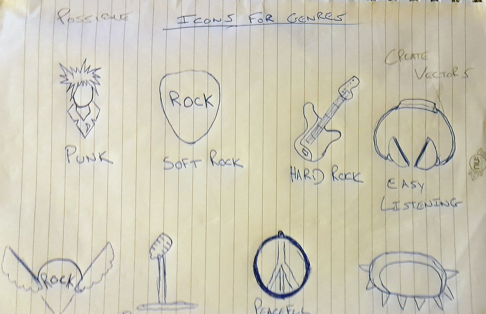
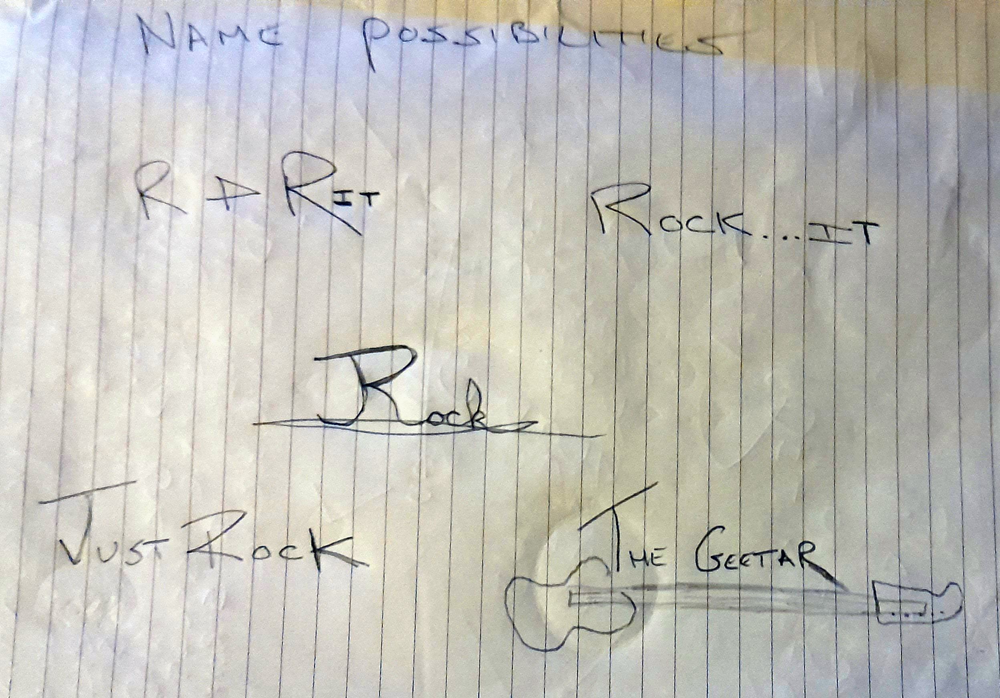
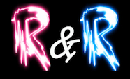
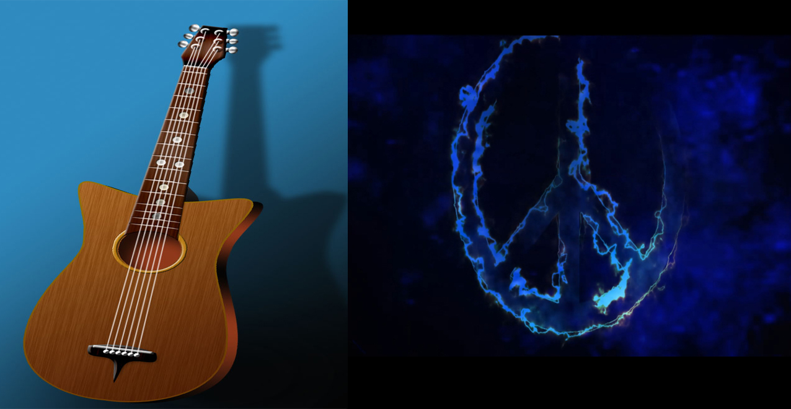
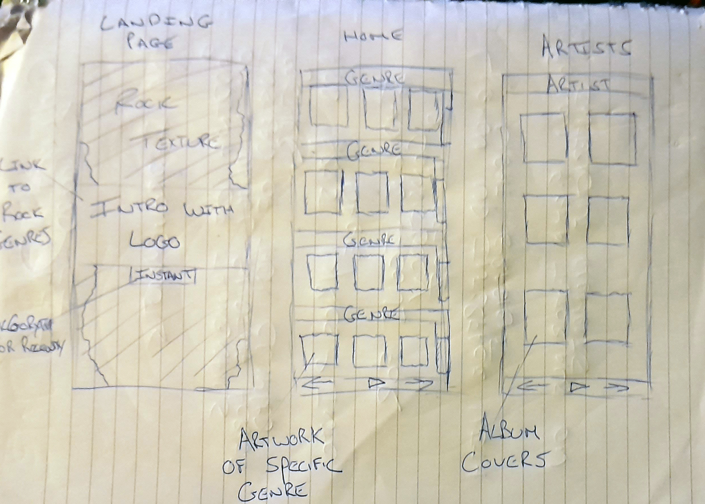
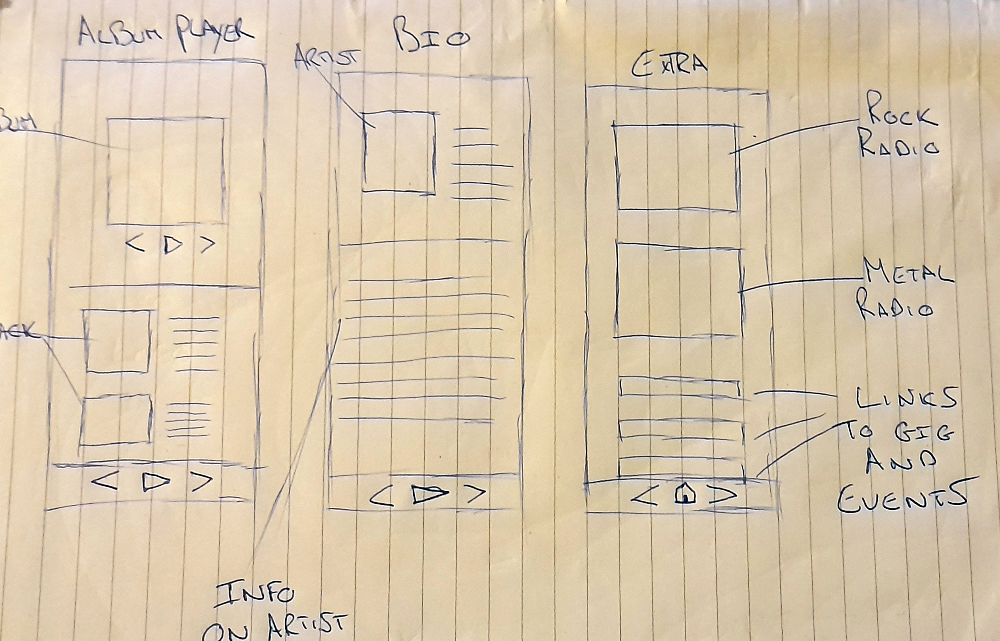
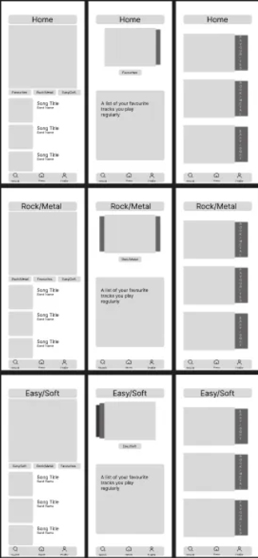
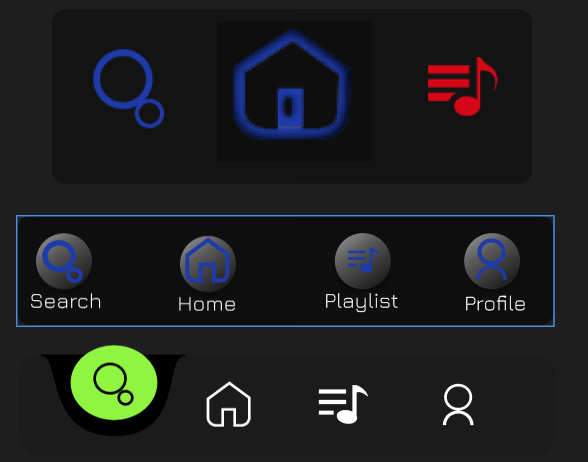

This seemed like it was a project specifically catered to me. Everybody has spotify or a simialar style music application which ticks almost all the boxes for navigation, flow and customisation. With its build in algorythm there did'nt seem any logic in trying to recreate something that has already been done. For that reason I decided to direct the design to an application I would use personally. Putting myself as the user, I steered the design towards Rock/Metal. From the sketches below I began drawing possible icons for the genres and sub genres.
Sketches / Name

After condering the time frame for the assignment I soon realised to create a funcional application with all these genres would be impossible. So I stripped the concept into two, hard and soft rock. This seemed like a much more reasonable approach so I began thinking of names. R&R came to me almost right away with the double meaning of rest and relaxation for the easy soft rock. These were my early sketches for the splash landing page & name for the app...


A soon as I was settled on creating two main styles and the name I started creating possible graphics in Photoshop and Illustrator. I had a few different ideas in which to approach this. The rock & heavy metal aspect came quite easily but finding the correct image for the soft rock side I wresled with a couple of different concepts. These are the early ideas I tried keeping a soft mellow vibe in mind.

Although I really liked the ideas and how the graphics turned out, I wasn't sure if they would fit within the UI so I kept them aside and began focususing on the overall layout to get a visual of how I could incorporerate the appropriate graphics. These are the sketches of the wireframes from other music applications I found online.


These sketches looked very rough and I didn't really feel I was getting a proper grasp of the UI so I created mid fidelity wireframes for a better visualisation.
Wireframes

These gave me a somewhat broad idea of how the UI would look, having a different layout for each genre I felt would work well but with the time constraint I decided to try and combine some elements from each into one simple page. To keep it as simple as possible I decided to use the top panel of the first home page wireframe and use it as a favourites page, showing your favourite songs you've recently played.
In my head this alone with a nvigation panel at the bottom seemed like a much to simplistic appraoch so I began to think what I could add to give a more complete looking UI. I seen this guitar Icon online and immediately knew I wanted to implement it into my Interface In some way...
Graphics / Navigation
.jpg)
This really was the key to completing my UI. I was confident that having this as the main source of navigating between the two styles of rock was the way to go. Having it as an overlayed layer you could slide down with buttons navigating you to the two different styles I thought would really work well.
Feeling I was beginning to get a solid direction on the Home Page UI, I began to design the icons for the application navigation. Here is a look at my original navigation design keeping the simplistic approach in mind.
At this point in the development I began to put the elements together with thumbnails of the albums on the favourites panel to see If my instincts were on the right path with the look and feel I was going for.

With the high conrast background and the primary colours within the UI I liked the way the design was going. The only real issue I had was the navigation. We were taught simple is always the best. For easy access and legibility I understood this but I thought I could still keep it simple but modernise the design a little.

This page is a breakdown of the design process of my home page. With it being catered for rock/metal fans I thought that a search engine that enabled you to play any style of music would be a nice element. This is the graphic I chose for that page. It may seem a little generic but to me it embodies all music and felt it would work well.
.jpg)
For the full design with the other elements take a look at the prototype created with Photoshop, Illustrator, Figma and Adobe After Effects.